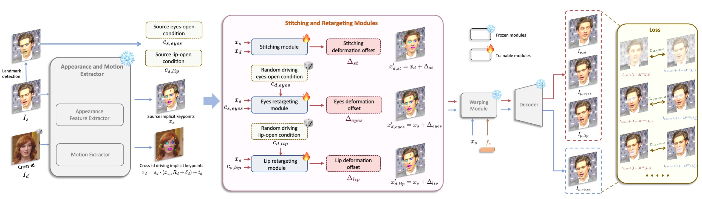

The results of our first-stage base model, without applying the stitching and retargeting modules, are presented here.
The results of our first-stage base model are presented in Ours w/o stitching, while Ours shows the results with the stitching module applied.
The quantitative radar comparisons with existing methods are presented above, with metrics normalized for better visualization.
Across various styles (realistic, oil painting, sculpture, 3d rendering) and different sizes
Source
Source
By fine-tuning on animals data, these cute cats, dogs and pandas can be precisely driven by humans
Portrait Animation aims to synthesize a lifelike video from a single source image, using it as an appearance reference, with motion (i.e., facial expressions and head pose) derived from a driving video, audio, text, or generation.
Instead of following mainstream diffusion-based methods, we explore and extend the potential of the implicit-keypoint-based framework, which effectively balances computational efficiency and controllability. Building upon this, we develop a video-driven portrait animation framework named LivePortrait with a focus on better generalization, controllability, and efficiency for practical usage. To enhance the generation quality and generalization ability, we scale up the training data to about 69 million high-quality frames, adopt a mixed image-video training strategy, upgrade the network architecture, and design better motion transformation and optimization objectives. Additionally, we discover that compact implicit keypoints can effectively represent a kind of blendshapes and meticulously propose a stitching and two retargeting modules, which utilize a small MLP with negligible computational overhead, to enhance the controllability. Experimental results demonstrate the efficacy of our framework even compared to diffusion-based methods. The generation speed remarkably reaches 12.8ms on an RTX 4090 GPU with PyTorch. The inference code and models are available at https://github.com/KwaiVGI/LivePortrait.
Pipeline of the first stage: base model training. The appearance and motion extractors \(\mathcal{F}\) and \(\mathcal{M}\), the warping module \(\mathcal{W}\), and the decoder \(\mathcal{G}\) are optimized. In this stage, models are trained from scratch. Please see the paper for more details.
Pipeline of the second stage: stitching and retargeting modules training. After training the base model in the first stage, we freeze the appearance and motion extractor, warpping module and decoder. Only the stitching module and the retargeting modules are optimized in the second stage. Please see the paper for more details.
@article{guo2024liveportrait,
title = {LivePortrait: Efficient Portrait Animation with Stitching and Retargeting Control},
author = {Guo, Jianzhu and Zhang, Dingyun and Liu, Xiaoqiang and Zhong, Zhizhou and Zhang, Yuan and Wan, Pengfei and Zhang, Di},
journal = {arXiv preprint arXiv:2407.03168},
year = {2024}
}